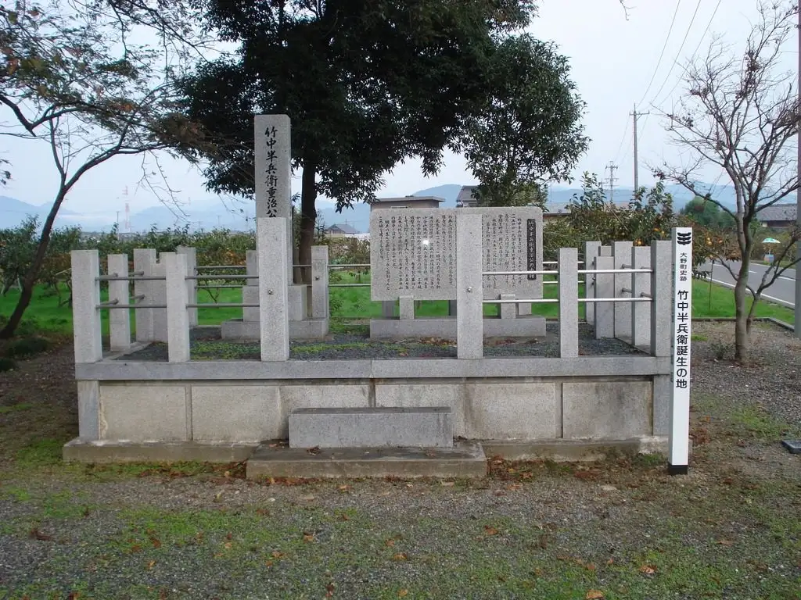
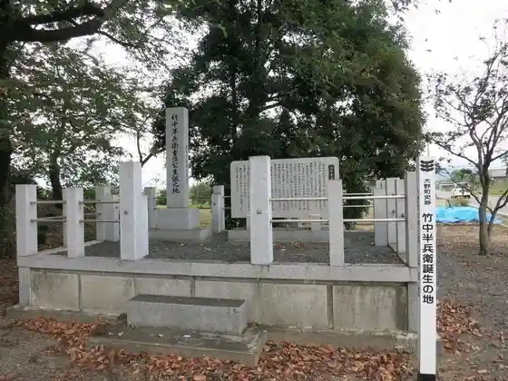
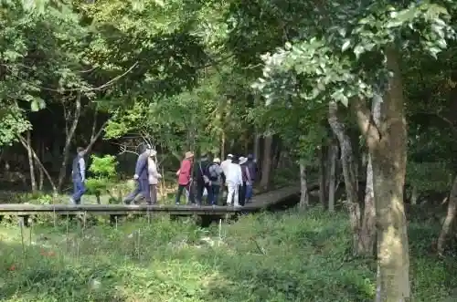

Onocho
Onocho · Gifu
Onocho
Highlighted on the Gifu map.

Sights
Roadside Station Parettopia O no
Onocho Bara Park
Takenaka Hambe Kimio Tan Yuki Chi

Shinrin Kukan Sansaku Michi Kizuna Forest

Kurono Eki Reru Park
no Kofun Gun
Onocho Akebo no Museum
Ibi Nido Zakura
Dai Mido Castle Ruins